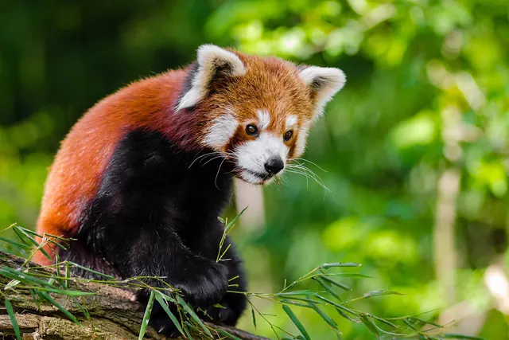

Panda behavior: how giant and red pandas live
Giant pandas spend most of each day eating bamboo and the rest resting, living alone and keeping in touch mainly through scent marks. Red pandas are solitary tree dwellers most active at dawn and dusk. Both have a very short breeding window each year and invest heavily in a small number of young.

A giant panda's day
Because bamboo is so low in usable energy, a giant panda's routine is built around feeding. It forages and eats for 10 to 16 hours a day, usually sitting upright with its back against something, and spends most of the remaining time asleep or resting. Wild pandas typically nap for two to four hours between feeding bouts, on their side, back or belly, sprawled out or curled up; rests can stretch to six hours or more in summer. They keep defecating while they rest, and field researchers use the number of droppings at a rest site to estimate how long a panda stayed there.
Giant pandas do not hibernate. They cannot store enough fat on bamboo to survive months without food, so they stay active year round and move to different elevations with the seasons. See do pandas hibernate?
Social life: alone, but not out of touch
Adult giant pandas are solitary and protective of their space. If two meet outside the breeding season they may growl, swat, lunge or bite. The two exceptions are the brief mating period and mothers with cubs.
Being solitary does not mean being isolated. Smithsonian researchers report that giant pandas may form communities of about 7 to 15 animals that share a group territory, where male home ranges overlap almost completely and female ranges overlap much less. San Diego Zoo Wildlife Alliance describes home ranges of roughly 5 to 18 square kilometres, larger where bamboo is scarce.
Scent marking holds this network together. Both sexes rub a waxy secretion from a gland under the tail onto trees, rocks and bamboo, usually along regular paths. A mark works like a notice board: another panda can tell the sex, age, reproductive condition and identity of the animal that left it, and roughly how old the mark is. Males sometimes back up a tree into a handstand so their mark sits higher, and pandas seem most interested in the highest marks.
Giant panda sounds
Giant pandas lack many visual signals: their faces are round and fairly inexpressive, the tail is a stub and the ears do not move much. Dense, misty bamboo would block most visual signals anyway. Sound fills the gap, especially in the breeding season. San Diego Zoo Wildlife Alliance calls pandas arguably the most vocal of all bears. Calls include the friendly bleat, plus honks, huffs, barks, growls and a roar that sounds nothing like a brown bear's. Cubs croak and squeal.
Mating and raising cubs
A female giant panda ovulates once a year in spring and can conceive for only two to three days. In the days beforehand her scent marks change, and males that detect this stay close and check on her often. A female is more likely to accept a male whose scent she already knows. After mating the male leaves; the mother raises the cub alone.
Cubs are born after 90 to 180 days, tiny and helpless (see giant panda cubs). A mother usually raises only one even if she has twins. Young cubs left alone climb high into trees and sleep there until she returns; predators such as golden cats, yellow throated martens and dholes can take small cubs, and a young panda is fairly safe once it reaches about 50 kg at around 2.5 years old. Young stay with their mother for 1.5 to 3 years.
A red panda's day
Red pandas are mainly crepuscular, most active around dawn and dusk, and spend about 45 percent of the day awake, more in cool weather. They often sleep through the hottest hours stretched along a branch or curled in a tree hollow with the tail over the face, and begin the day by grooming in a cat like way. When temperatures fall sharply they can enter a dormant state, lowering their metabolic rate and waking every few hours to feed.
They are agile climbers that come down trunks headfirst thanks to very flexible ankles. Adults live alone in home ranges of roughly 2.5 square kilometres (about 1 square mile, per the Smithsonian) and mark them with urine, anal gland secretions and scent from glands between the footpads. Threat displays include stare downs with head bobbing, and a threatened red panda may give a loud, barking grumble.
Red panda breeding and cubs
In the Northern Hemisphere red pandas breed from January to March (June to August in Southern Hemisphere zoos), triggered by changing day length after the winter solstice. During this season they come together, and play such as wrestling and lunging is seen. Like giant pandas, females are fertile for only a day or two a year, and delayed implantation stretches gestation to roughly 93 to 156 days. Just before giving birth the mother builds a nest of leaves, moss and twigs in a hollow tree, stump or rock crevice. Usually two furred cubs are born between May and July; they stay with her for about a year.
Frequently asked questions
Are pandas solitary?
Mostly. Adult giant pandas live alone outside the brief mating season and mothers with cubs, though Smithsonian research suggests loose communities of 7 to 15 animals share an area. Red pandas are also solitary except in the breeding season.
How long do pandas sleep?
In the wild, giant pandas typically rest for two to four hours at a time between feeding bouts, sometimes six hours or more in summer. Red pandas spend about 45 percent of the day awake and are most active at dawn and dusk.
Are giant pandas dangerous?
They can be. The Smithsonian notes that despite their cuddly look, giant pandas can be as dangerous as any other bear. Wild adults that meet may growl, swat, lunge and bite.
What sound does a panda make?
Giant pandas bleat like a lamb as a friendly greeting, and also honk, huff, bark, growl and roar; cubs croak and squeal. Red pandas squeal, twitter, huff quack, hiss and grunt, and cubs whistle.